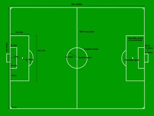

Фудбал спада у групне спортове. Фудбал се игра по прописима који се називају правила фудбалске игре. Сви учесници, 22 играча, чине све сагласно с правилима игре да задрже лопту у поседу своје екипе и да је спроведу у противнички гол. Екипа која постигне више погодака на крају утакмице је победник, а ако обе екипе имају једнак број постигнутих погодака, или ниједна екипа не постигне погодак, утакмица је нерешена (реми).
Правила фудбалске игре су донета средином 19. века да би коначно ујединила све врсте фудбала које су се играле по разним школама широм Велике Британије. Прва су правила измишљена у Кембриџу 1848, али нису била усвојена. Током 50-их година 19. века бројни клубови у државама с енглеским као матерњим језиком играли су фудбал који се разликовао од једног до другог места. Најстарије фудбалско такмичење је енглески ФА куп, први пут одржан 1872. Енглеска је такође дом најстарије лиге, основане 1888. од стране Астон Виле. Оригинални систем такмичења окупљао је 12 екипа из средње и северне Енглеске.
Игралиште је у облику правоугаоника. За међународне утакмице, дужина не сме да прелази 90 до 100 метара, а ширина би требало да буде између 65 и 75 метара (некада дужине од 90 до 110 метара и ширине од 45 до 90 метара, а данас тачно 105 m са 68 m - по прописима УЕФЕ).
